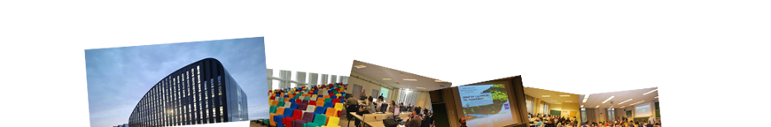
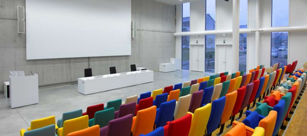

Call for papers
Help making our 2019 edition a success

On the Thursday 24 October 2019, OSGeo-be will host an event dedicated to free geomatics in Brussels at BEL, the Environment and Energy Agency of Brussels. FOSS4Gbe will be a day of conferences, demonstrations, debates and meetings about OSGeo topics. It will also be an opportunity to bring together the community of users, developers, policy makers or just curious FOSS geomatics.
The event is expected to gather around 250 to 400 people.
We will share knowledge and experiences during the whole event through presentations and demonstrations with 25 minutes each at most.
Presentations and side tracks
There will be several parallel streams
Plenary sessions will be show cases of FOSS4G usages within business, administration, education and research.
Other sessions will be defined depending on the submissions received, but we welcome everything from presentations on general user experience to developer talks.
Did you use free software tools in a specific context - large SDI, Big Data, specific customer, innovative project, etc. - for your own business, research or for education?
Are you an expert in GIS ?
If you meet any of these, STOP and... feel free to suggest a presentation!
Topics & Debates
Tools • Goals • Applications
Foss4G’s Tools: What are the current offers for storage, treatment and web distribution of spatial data?
How do Open Source tools allow you to successfully personalize software for your needs?
Goals: How can OSGeo help you in your organization? How to build an effective Open Source solution?
How to choose between different solutions?
Applications: Which Open Geomatics tools are deployed and used by administrations, companies, teachers and researchers? What about INSPIRE infrastructures, climate change and smart cities? What are the problems and opportunities that you encountered during migration of commercial software to Open Source software?
OpenStreetMap: How do you use OSM data in your work ? Did you create a cool application with OSM data ? Are you an OSM geek and would like to discuss OSM specifics ?

Format of presentations
Presentation will take place both in English and in the major official languages of Belgium: Dutch and French.
Each individual presentation will be allowed about 20 minutes and 5 minutes for Q&A.
Submissions can be written in English, French or Dutch (and adhere to the template available soon in ODT format).
Submission
Summaries must be submitted using this form by specifying the following elements:
- Your name and first name;
- A contact email;
- Your company (organization) and/or employer;
- Your intervention's title;
- A short abstract (300 words max.)
Deadline
Deadline for submissions: September 22 (extended) Deadline for submission is September 22, but we invite presenters to send their title as soon as possible. Abstracts will be evaluated by a program committee and authors will be notified of their acceptance on September the 25th, 2019.
All the presentations will be made available on the event website.
How do we evaluate
The choice of presentations will be based on the quality of the submitted material, its interest for professional and student audiences and also its consistency with the program. The decision of the selection committee will be final and binding. Committee members speak on their own behalf, their choices do not reflect the position of their employer.
The Dutch and French coordinators of the program committee are Johan Van de Wauw (NL) and Gaël Kruwialis (FR).
We encourage you to send us an email for any inquiries.